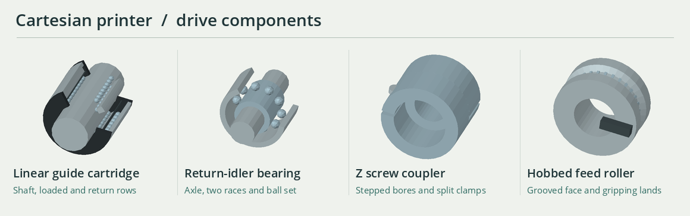

Cartesian Printer
Cartesian printer model including drive geometry and deposition-related engineering studies.
Quality rating
Visual fidelity unmeasured
Evidence completeness 80/100. No independent parser, physical or visual match test performed. Do not treat as validated engineering design.
Source
CartesianPrinter.p3d · 38997 bytes
26d9f982f4e88066f35e42d327f252f2ea5071f6Grammar usage
Open the file in the ProGen3D desktop editor with File → Open (Ctrl+O). Regenerate, frame the scene and inspect front, right, top and isometric views. Use the matching development commit and original source directory when operators or dependent assets are not available on main. Verify parser, geometry and simulation results independently before reuse.
Sample renders

Provenance and documentation
Original branch mechanics/cartesian-printer-deposition; commit e9926bb9c17c3f7b13e771a4330843ce7b51f0ee.